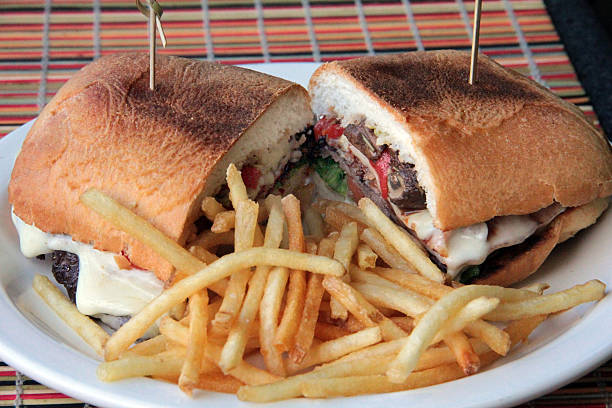
Chivito
Considerado o prato mais famoso do Uruguai, o Chivito é um sanduíche preparado com filé bovino grelhado, presunto, queijo, bacon, ovo, alface, tomate e maionese, servido em pão macio.
Bem-vindo ao Terra Charrúa, um espaço dedicado a explorar a cultura, a história e as tradições do Uruguai. Aqui, você encontrará informações sobre seus principais pontos turísticos, a gastronomia, os costumes e diversas curiosidades que ajudam a compreender a identidade única do país. Nosso objetivo é apresentar, de forma clara e interessante, a riqueza cultural e as características que tornam o Uruguai um lugar tão especial, convidando você a conhecer mais sobre a essência da nação uruguaia.
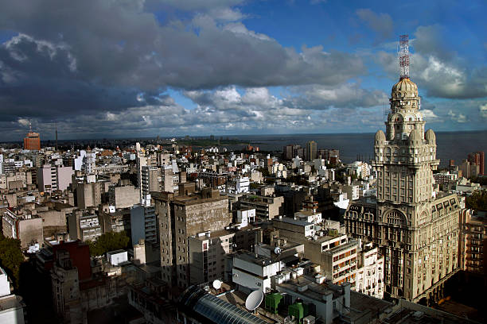
Montevidéu
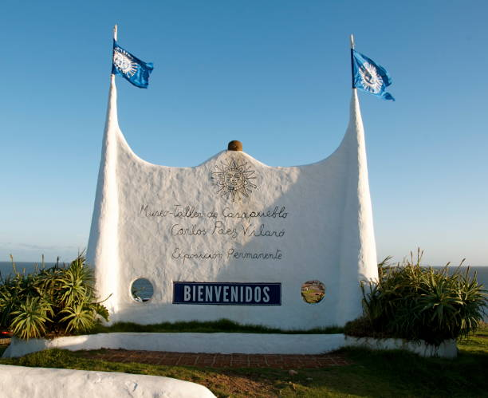
Punta del Este
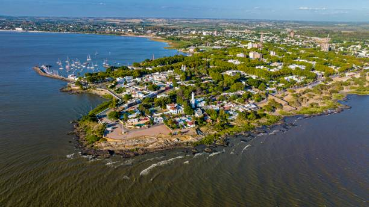
Colônia do Sacramento
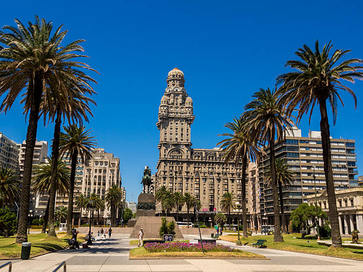
Palácio Salvo
Montevidéu
Punta del Este
Colônia do Sacramento
Palácio Salvo
O Uruguai chega à Copa do Mundo de 2026 com a tradição de uma das seleções mais vitoriosas da história do futebol. Bicampeão mundial (1930 e 1950), o país busca mais uma vez demonstrar sua força internacional, apostando na combinação entre jogadores experientes e uma nova geração de talentos. Conhecida pela raça, pela disciplina tática e pelo espírito competitivo, a seleção uruguaia pretende ser uma das protagonistas do torneio, que será realizado nos Estados Unidos, Canadá e México. Além dos resultados dentro de campo, a participação do Uruguai representa o orgulho de uma nação apaixonada por futebol, que vê na Copa do Mundo uma oportunidade de reafirmar sua rica tradição esportiva e fortalecer sua identidade perante o mundo.

Considerado o prato mais famoso do Uruguai, o Chivito é um sanduíche preparado com filé bovino grelhado, presunto, queijo, bacon, ovo, alface, tomate e maionese, servido em pão macio.
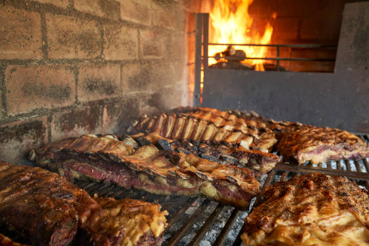
O Asado é o tradicional churrasco uruguaio, preparado lentamente na parrilla e composto por diversos cortes de carne bovina, sendo um dos maiores símbolos da cultura do país.
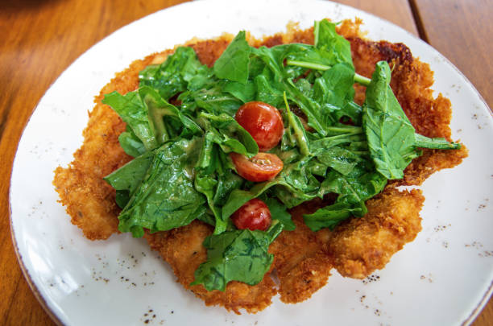
A Milanesa é um filé de carne bovina ou frango empanado e frito, geralmente servido com batatas fritas, saladas ou utilizado em sanduíches tradicionais.
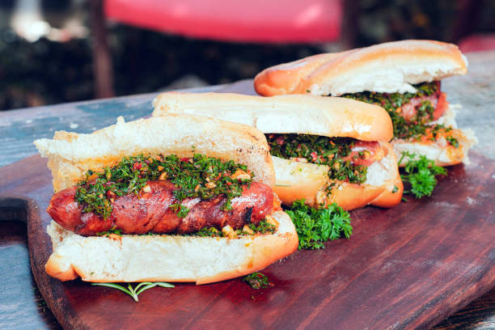
O Choripán é um sanduíche preparado com linguiça grelhada, servido em pão crocante e acompanhado do tradicional molho chimichurri.
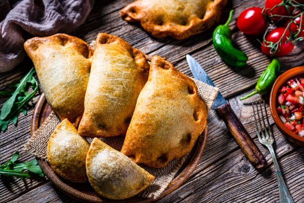
As empanadas são pastéis assados ou fritos recheados com carne, queijo, cebola ou presunto, sendo um dos lanches mais populares do Uruguai.
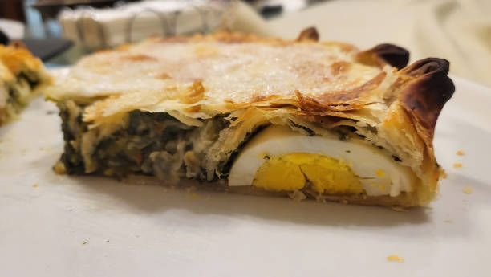
A Pascualina é uma torta salgada feita com espinafre, acelga, ovos, cebola e queijo, demonstrando a forte influência italiana na culinária uruguaia.
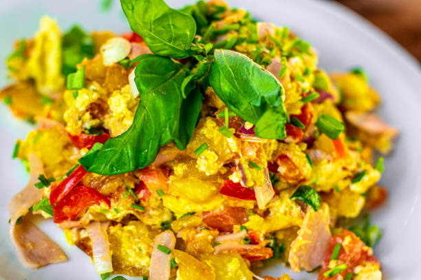
O Revuelto Gramajo é preparado com ovos mexidos, batatas fritas em tiras, presunto e ervilhas, formando uma refeição simples, nutritiva e muito apreciada no país.
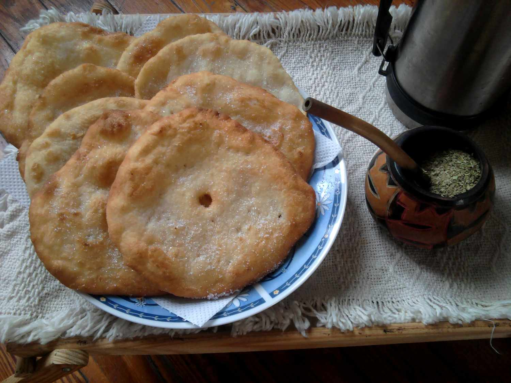
A Torta Frita é uma massa redonda frita em óleo, tradicionalmente consumida acompanhada de mate, principalmente em dias frios e chuvosos.
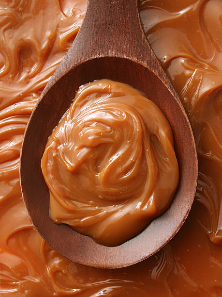
O Dulce de Leche é um doce muito popular no Uruguai, utilizado em diversas sobremesas, biscoitos, sorvetes e recheios.
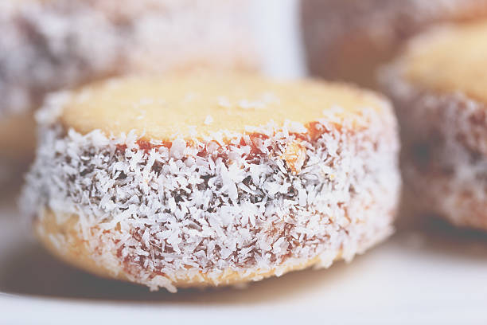
O Alfajor uruguaio é composto por duas camadas de massa macia, recheadas com doce de leite e cobertas com chocolate ou açúcar, sendo uma das sobremesas mais tradicionais do país.
Instagram: @Terra_Charrúa
WhatsApp: (11) 99874-2156
Telefone: (11) 4128-7634
E-mail: contato@Terra_Charrúa.com.br
Brasileiros no Uruguai
Master Turismos Uruguai
Sanderos Uruguai
Civitatis
CVC Viagens
Avenida Kazumi Yoshimura, 430, Distrito Industrial - Vila Isabel, Itapeva - SP, 18410-480